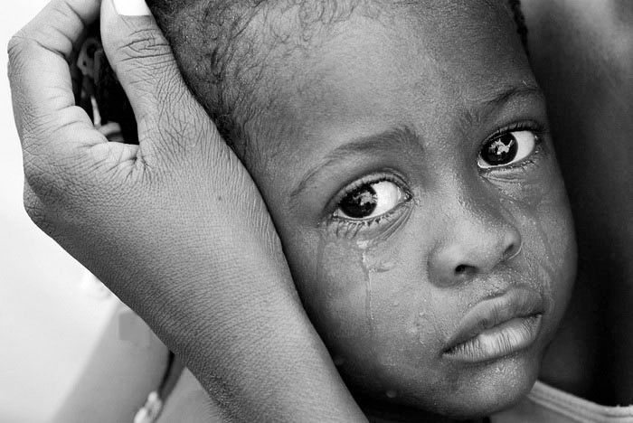

FIN DE LA POBREZA
Objetivos:
- Para 2030, erradicar la pobreza extrema para todas las personas en el mundo.
- Reducir al menos a la mitad la proporción de hombres, mujeres y niños de todas las edades que viven en la pobreza en todas sus dimensiones
- Poner en práctica a nivel nacional sistemas y medidas apropiadas de protección social para todos, incluidos niveles mínimos
- Garantizar que todos los hombres y mujeres, en particular los pobres y los vulnerables, tengan los mismos derechos a los recursos económicos, así como acceso a los servicios básicos
- Fomentar la resiliencia de los pobres y las personas que se encuentran en situaciones vulnerables y reducir su exposición y vulnerabilidad a los fenómenos extremos relacionados con el clima y otras crisis y desastres económicos, sociales y ambientales
- Crear marcos normativos sólidos en los planos nacional, regional e internacional, sobre la base de estrategias de desarrollo en favor de los pobres que tengan en cuenta las cuestiones de género, a fin de apoyar la inversión acelerada en medidas para erradicar la pobreza

¿Qué es la pobreza?
La pobreza es una situación o una condición social y económica de la población que no le permite satisfacer sus necesidades básicas, ya sean éstas físicas o psíquicas.
Es un problema de derechos humanos...
Entre algunas de las manifestaciones de la pobreza figuran el hambre, la malnutrición, la falta de una vivienda digna y el acceso limitado a otros servicios básicos como la educación o la salud

836 Millones de personas viven actualmente en condiciones de extrema pobreza. El 84% de la pobreza se concentra en ÁFRICA SUBSAHARIANA y ASIA MERIDIONAL.
Datos de interés:
- Unos 783 millones de personas vive por debajo del umbral de pobreza internacionsal, con 1,90 dólares diarios.
- Uno de cada cuatro niños menores de cinco años, en todo el mundo, tiene una estatura inadecuada para su edad.
- En 2016, solo el 45% de la población mundial estaba amparada efectivamente por un sistema de protección social con al menos una prestación en efectivo.
¿Por qué hay tanta pobreza en el mundo?
La pobreza tiene muchas dimensiones, pero sus causas son el desempleo, la exclusión social y la alta vulnerabilidad de determinadas poblaciones a los desastres, las enfermedades y otros fenómenos que les impiden ser productivas.
¿Por qué debería importarme la situación económica de otras personas?
Nuestro bienestar está vinculado al de las demás personas. El aumento de la desigualdad es perjudicial para el crecimiento económico e incrementa las tensiones políticas y sociales
¿Qué puedo hacer al respecto?
La comunidad académica y educativa desempeñan un papel importante a la hora de concienciar sobre los efectos de la pobreza. La ciencia sienta las bases de enfoques, soluciones y tecnologías nuevas y sostenibles para hacer frente a los desafíos de reducir la pobreza y lograr el desarrollo sostenible